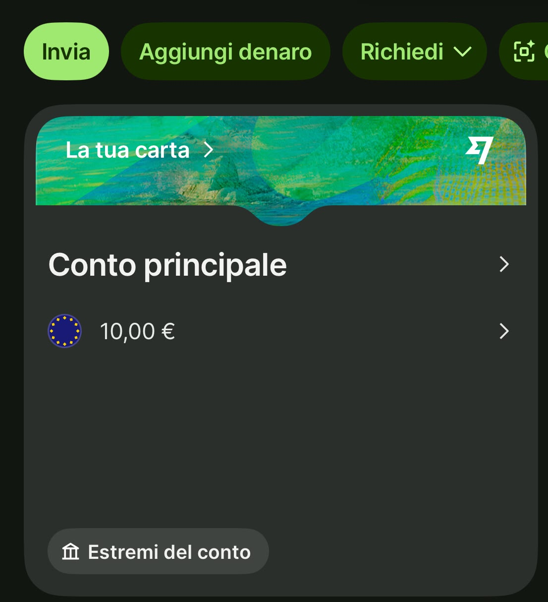

📌 In sintesi
Wise è un conto multivaluta che apri online in pochi minuti. Non è una banca ma un istituto di moneta elettronica regolamentato in Europa. È gratuito da aprire, ti dà un IBAN (belga) per ricevere e inviare bonifici e una carta per spendere in oltre 40 valute al tasso di cambio reale, senza le maggiorazioni nascoste delle banche tradizionali. Paghi solo commissioni trasparenti, mostrate prima di ogni operazione.
Perché questa guida
A differenza di Revolut, che uso da anni, con Wise sto facendo il percorso "da zero" proprio in questi giorni: apertura conto, verifica identità e un primo trasferimento reale per testarlo di persona prima di consigliarlo. Questa guida nasce da due fonti: i dati ufficiali pubblicati da Wise (commissioni, tempi, regolamentazione) e la mia esperienza pratica, che aggiornerò via via con screenshot reali man mano che completo il test.
L'obiettivo è darti numeri veri, non stime: cosa costa aprire il conto, cosa costa cambiare valuta, quanto ci mette un trasferimento e cosa succede se qualcosa va storto.
Cos'è Wise (davvero)
Wise (nato come TransferWise nel 2011) è oggi usato da quasi 19 milioni di clienti attivi in oltre 160 paesi (dato riferito all'anno fiscale 2026). Non è una banca: è un istituto di pagamento/moneta elettronica, e in Europa opera tramite Wise Europe SA, autorizzata dalla Banca Nazionale del Belgio con passaporto valido in tutto lo Spazio Economico Europeo, Italia inclusa.

La dashboard di Wise dopo il login: conto principale, saldo e accesso rapido a carta ed estremi del conto.
Il conto ti permette di detenere, ricevere e convertire oltre 40 valute senza costi solo per tenerle in portafoglio. Ricevi estremi di conto locali (tra cui IBAN in euro, account number USD, sort code GBP) per farti pagare come un residente in quei paesi, e puoi convertire tra le valute che possiedi al tasso di cambio medio di mercato, aggiornato ogni minuto, senza margini nascosti.
Insieme al conto puoi richiedere la carta di debito Wise, utilizzabile in oltre 150 paesi, che spende automaticamente nella valuta che possiedi o converte al momento del pagamento se non la possiedi.
Scopri tutti i dettagli sulla carta Wise →
Perché conviene rispetto a un cambio tradizionale
Il motivo principale per cui le persone passano a Wise è la trasparenza sul cambio valuta. Le banche tradizionali applicano quasi sempre un margine nascosto nel tasso di cambio che propongono (il cosiddetto "cambio maggiorato"), senza indicarlo come commissione separata. Wise mostra il tasso reale e la commissione a parte, prima che tu confermi l'operazione.
Oltre 40 valute
Detieni, ricevi e converti valute diverse in un unico conto.
Tasso di cambio reale
Nessun margine nascosto: vedi commissione e tasso separati.
Carta multivaluta
Spendi in oltre 150 paesi, senza commissioni extra all'estero.
Tutto da app
Trasferimenti, conversioni e carta gestiti dallo smartphone.
Scopri come funzionano davvero le commissioni di cambio →
Cosa ti serve per aprire il conto
Prima di iniziare, assicurati di avere:
- Un indirizzo email e un numero di telefono per la verifica
- Un documento d'identità valido (carta d'identità o passaporto)
- Una prova di indirizzo recente (in alcuni casi)
- Uno smartphone per lo scatto di verifica del volto
- Un metodo per il primo versamento (bonifico o carta)
L'apertura del conto è gratuita, sia per uso personale che business. Non ci sono canoni mensili né importi minimi da depositare.
Quanto tempo ci mette un trasferimento Wise
Dipende dalla valuta, dal metodo di pagamento e dall'orario in cui invii i soldi. In genere:
- Pagamento con carta: spesso istantaneo o pochi secondi
- Bonifico bancario locale: da poche ore a 1-2 giorni lavorativi
- Conversione valutaria: di solito meno di 24 ore, al massimo 2 giorni lavorativi
- Bonifici SWIFT in entrata: fino a 5 giorni lavorativi
Wise mostra sempre una stima specifica prima di confermare l'invio e un tracker in tempo reale per seguire il trasferimento passo passo.
Wise è sicuro?
Wise Europe SA è regolamentata dalla Banca Nazionale del Belgio come istituto di moneta elettronica, con passaporto europeo. Non essendo una banca, non presta il denaro dei clienti: lo tiene segregato (safeguarding) su conti separati presso banche terze e asset liquidi a basso rischio. Questo è diverso dalla garanzia sui depositi bancari fino a 100.000€ che conosci da Revolut o da una banca tradizionale.
Approfondisci: Wise è davvero sicuro? →
Bonus e programma inviti Wise
Wise ha un proprio programma "Invita un amico": se ti registri con il mio link, ricevi subito una carta Wise gratuita e un trasferimento con conversione di valuta gratuito fino a 500€. Verificato direttamente dal mio account, con condizioni aggiornate a luglio 2026.
Registrati con il mio link e ricevi il regalo
Guida completa al bonus Wise →
Guida passo passo per aprire Wise
-
Registrati con email e telefono
Vai sul sito o sull'app Wise, inserisci email, crea una password e verifica il numero di telefono con il codice ricevuto via SMS. -
Scegli conto personale e inserisci i dati
Indica il tuo nome legale, data di nascita, indirizzo e paese di residenza (Italia). -
Verifica la tua identità
Carica un documento valido, in alcuni casi una prova di indirizzo, e uno scatto del volto quando richiesto dall'app. -
Aggiungi fondi
Deposita denaro tramite bonifico o carta, nella valuta che preferisci. -
Richiedi la carta (opzionale)
Attiva subito la carta virtuale gratuita o ordina quella fisica (7€ una tantum) per pagare in negozio e prelevare.
Domande frequenti su Wise
Wise è gratis?
Aprire il conto è gratuito e non ha canone mensile. Paghi solo per i servizi che usi: commissione di cambio, eventuali prelievi ATM oltre la soglia gratuita e il costo della carta fisica (7€ una tantum).
Quanto tempo serve per aprire un conto Wise?
La registrazione richiede pochi minuti. La verifica dell'identità è in genere rapida, ma può richiedere controlli aggiuntivi in alcuni casi.
Wise ha l'IBAN italiano?
No, l'IBAN è belga (BE). Funziona esattamente come un IBAN italiano per bonifici SEPA, ma ai fini fiscali va trattato come conto estero.
Wise è sicuro?
Sì, è regolamentato come istituto di moneta elettronica con passaporto europeo. I fondi sono segregati (safeguarding), un meccanismo diverso dalla garanzia sui depositi bancari.
Altre guide Wise
- 🎁 Bonus e programma inviti
- 💱 Commissioni di cambio: come funzionano
- 💳 Carta Wise: costi e limiti
- 📈 Interessi Wise: come funzionano
- 🔒 Wise è sicuro?
- ❓ Domande frequenti su Wise
- 🆚 Miglior conto digitale 2026: 6 conti a confronto
- 🆚 Trade Republic vs Wise
- 🆚 Satispay vs Wise
Informazioni sulla guida
Questa guida è basata sui dati ufficiali pubblicati da Wise e sul test che sto completando in prima persona (apertura conto e primo trasferimento reale). Aggiornerò i contenuti con screenshot autentici non appena disponibili.
Ultimo aggiornamento: